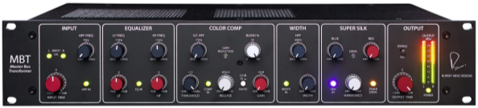
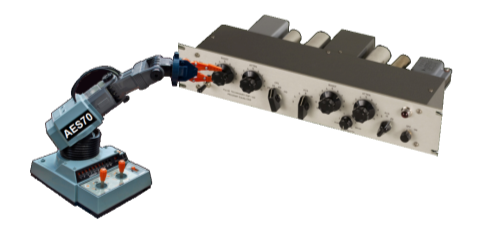
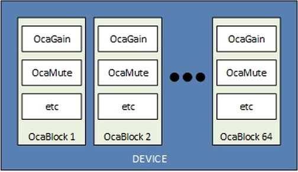
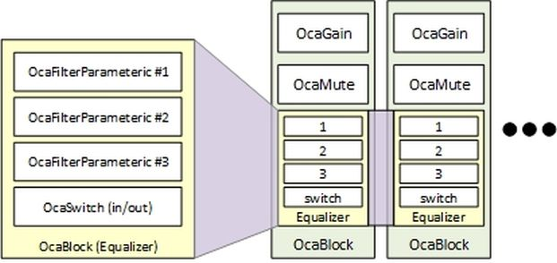
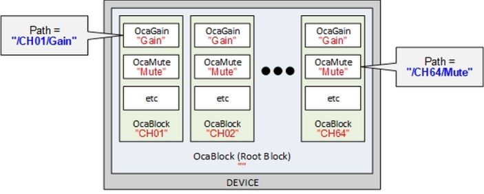

Contents
Introduction
This application note offers an approach for designing AES70-controllable devices. It applies to both physical devices and virtual (e.g. cloud-based) devices.
There are three steps, as follows:
Choose AES70 objects for your device. Working from the AES70 class tree defined in AES70-2, select a repertoire of objects that reflect the aspects of device function that AES70 will control and/or monitor.
Organize the objects. Using AES70 object collection features, organize the chosen objects into meaningful sets.
Identify the objects. Assign appropriate identification properties to each object.
Choosing AES70 objects
When you're designing an AES70 device, one of the first steps is choosing the device's set of AES70 control and monitoring objects. Here are some basic concepts:
Objects are interfaces. AES70 is a control and monitoring interface definition. In your device, each AES70 object will define a little part of the device's network control interface. Once you've picked and configured all the objects, your device's network control interface is completely specified.
Classes. Classes are templates for objects. Each kind of object is constructed from a particular class. AES70 defines about 100 classes. About 60 of these classes cover common audio processing and monitoring functions - gain, equalization, delay, level metering, and so on. The other 40 cover other important functions such as managing digital streaming audio input/output, handling presets, and more. Class names all begin with "Oca" , e.g. OcaGain is a class for constructing gain control objects.
Selecting objects. For each device function you want to control and/or monitor with AES70, you pick an AES70 object. For example, an AES70-controllable gain function would be assigned an OcaGain object (i.e. an object constructed from class OcaGain . A level-monitoring function would be assigned an OcaAudioLevelSensor object, and so on.
Multiplicity. An AES70 class can be instantiated any number of times. If your device has 24 network-controllable gain controls, you'll have 24 independent OcaGain objects.
Managers
In addition to control and monitoring objects, AES70 requires a few other objects for housekeeping purposes. These objects are called 'managers". At a minimum, your device will need two of them: an OcaDeviceManager object, to contain basic device info (manufacturer, model, version and so on) and an OcaSubscriptionManager object, to manage 'subscriptions", which are monitoring relationships between devices and controllers.
Note to Dante users: an AES70 subscription isn't the same as a Dante subscription. A Dante subscription is a media connection request; an AES70 subscription is a controller's binding to device-generated event notifications.
AES70 classes
Most of AES70's 100 classes are of a specific nature - OcaGain, OcaMute, OcaFilterParametric, etcetera - but there is also a rich set of generic classes that allow access to nonstandard parameters. Generic classes are provided for standard programming datatypes.
For example, the classic Rupert Neve Master Bus Transformer (MBT) equalizer has a number of controls with unconventional labels - 'blue", 'red", 'harmonics", 'blend", etc. that don't correspond to any specific AES70 class.

Neve Master Bus Transformer
A good way to automate this equalizer would be to use specific classes where applicable- e.g OcaGain objects for gain controls - and generic classes for the special controls. A good choice in this case would be the OcaFloat32 class, which allows control of an arbitrary 32-bit IEEE floating-point parameter.
AES70 objects
An AES70 object is an interface to a function, not an implementation of it. The picture below shows a whimsical example in which an AES70-controlled robot arm automates the controls of a vintage Pultec equalizer. The robot arm contains AES70 objects that correspond to the knobs on the equalizer's front panel. An AES70 controller doesn't know - or need to know - that the controls are implemented robotically.

Pultec EQ + AES70 robot arm
Controlling complex functions
Sometimes controlling a complex device function will require more than one AES70 object. For example, controlling an advanced compression function could require three or more objects. There's nothing wrong with that. If there's a complex function in your device that doesn't match any of the standard classes, feel free to define a collection of objects to cover all of its features.
Proprietary classes
AES70 allows implementers to define their own classes when necessary. This topic is covered in a separate Application Note.
Organizing objects
Once you've chosen your AES70 objects for your device, you'll need to organize them.
Blocks
The main organizing element in AES70 is the OcaBlock object, which is a collector for other objects. An OcaBlock object ("Block' for short) doesn't have any control or monitoring functions of its own - it's just a grouping tool to help keep things organized.
For example, consider a 64-channel mixer. Each channel will have a number of control and monitoring objects - gain, equalization, mute, level metering, and so on. To make an AES70 design for such a mixer, you'd define a Block that contained all of the objects for one channel, then duplicate that Block 63 times to handle the other channels.

64-channel mixer
Nesting
You can put Blocks inside Blocks, to any level.
For example, maybe your mixer uses a three-band parametric equalizer on all its inputs and outputs. You could design a Block with three OcaFilterParametric objects, one for each band, plus an OcaSwitch object for the in/out button. Then you could insert instances of that Block design throughout your design where needed - in input channel Blocks, in group Blocks, in aux send Blocks, whatever.

Nested blocks
Root Block
Except for Manager objects, every AES70 object must reside inside a Block. This includes OcaBlock objects. By default, everything is contained in one special Block called the Root Block. The Root Block is the only Block that stands alone, without an enclosing Block. When you define your own Blocks, such as the mixer channel Blocks envisioned above, they will all reside somewhere inside the Root Block - either directly in the Root Block, or in another Block that's nested inside the Root Block.
Identifying objects
Once you've chosen your AES70 objects for your device and organized them, you'll need to give them identifiers.
Object Numbers
Every AES70 object in a device has a unique 32-bit unsigned Object Number, or ONo for short. All AES70 control and monitoring commands use ONos to identify what they're controlling or monitoring. ONos obey two rules:
ONos are static. Once an object has been defined, its ONo mustn't change. For devices with fixed configurations, ONo values will be chosen at product design time. For software-defined devices that allow controllers to add, change, and delete objects on the fly, ONo values are chosen during device operation.
ONos are arbitrary. AES70 doesn't require ONo values to doesn't depend what class their objects come from. For example, a device might have three OcaGain objects with ONos of 5000, 123456, and 2000001. As a device designer, you're free to allocate ONo values however you want, as long as every object in the device has a unique ONo value in the range 4,096 ... 4,294,967,295.
There are two exceptions to this rule:
- Manager objects, which AES70 assigns predefined ONo values starting with 1 for the Device Manager.
- The Root Block, whose ONo is always 100.
Rolepaths
Rolepaths are an optional AES70 mechanism that can be used to identify objects by name. Rolepaths don't replace Object Numbers, but they are a useful mechanism for intuitive object identification.
Roles
Every AES70 object - including Block objects - has a property named Role whose value is assigned when the object is defined, and doesn't change thereafter. Role is comparable to the text that would be etched onto a device's front panel for a conventional control: 'Channel 1 Gain", 'Channel 2 Level", and so on.
Normally, every object's Role value will be chosen to be unique within its containing Block.
Like other objects, Blocks have Role values of their own. The Role of the Root Block must always be a null string.
Rolepaths
Because every object lives in a Block, and Blocks can be nested, we can define an object's Rolepath that locates the object within its device. An object's Rolepath is its own Role value prepended by the Role values of the Blocks that contain it, Root Block first.
When using Rolepaths, we typically write the names by a "/", in the same way as file and folder paths are coded in normal computers. (In AES70 interfaces, a Rolepath is actually coded as an array of Role values.)
Here are Roles and Rolepaths for the 64-channel mixer example mentioned above. In this picture, Roles are shown in red, Rolepaths in blue.

Rolepaths for 64-channel mixer
Using the Role / Rolepath mechanism is optional in AES70. If you don't want to use it, you can just leave all your objects' Role properties blank. However, using it will probably make the lives of developers and users simpler.
Labels
Except for Manager objects, every AES70 object has an optional Label property that controllers can change at any time to identify the purpose of the object in the application. Label provides the same function as the tape-and-marker labels ("scribble strips") that system operators sometimes stick onto conventional control panels.
Label is a separate and distinct property from Role . Role values are set at time of object creation. Label values are normally set by controllers, and will vary from application to application and time to time.
Finding objects
OcaBlock contains methods (i.e. functions) that allow controllers to find objects in several ways:
- By Object Number
- By Role
- By Rolepath
- By Label
Recursive options are provided, to allow a Controller to search a given OcaBlock and all of its contained OcaBlocks with a single method call. Controllers that do not have prior knowledge of a device's objects can use these methods to compile a complete picture of a device's control and monitoring interface.
References
AES70 standards
The following Audio Engineering Society standards define the AES70 Suite:
| ID | Current Version | Name |
| AES70-1 | 2024 | AES standard for audio applications of networks - Open Control Architecture - Part 1: Framework |
| AES70-2 | 2024 | AES standard for audio applications of networks - Open Control Architecture - Part 2: Class structure |
| AES70-3 | 2024 | AES standard for audio applications of networks - Open Control Architecture - Part 3: OCP.1 Binary protocol |
| AES70-4 | 2026 | AES standard for audio applications of networks - Open Control Architecture - Part 4: OCP.2 JSON-based protocol |
| AES70-21 | 2026 | AES standard for audio applications of networks - Open Control Architecture - Part 21: Using AES70 to manage AES67 and SMPTE ST 2110 30 media transport |
| AES70-22 | 2024 | AES standard for audio applications of networks - Open Control Architecture - Part 22: Using AES70 to manage Milan™ media transport |
| AES70-23 | 2026 | AES standard for audio applications of networks - Open Control Architecture - Part 23: Using AES70 to manage Dante® media transport |
Copies of these standards are available from the AES Standards Store, aes2.org/publications/standards-store.
AES standards documents are free to AES members. You're encouraged to join!
© OCA Alliance 2026